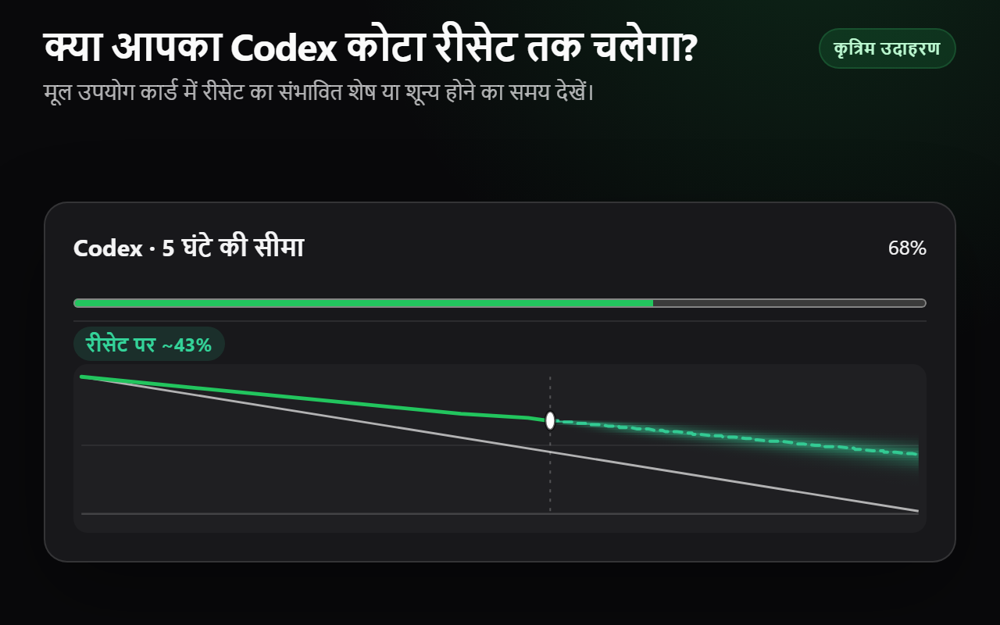
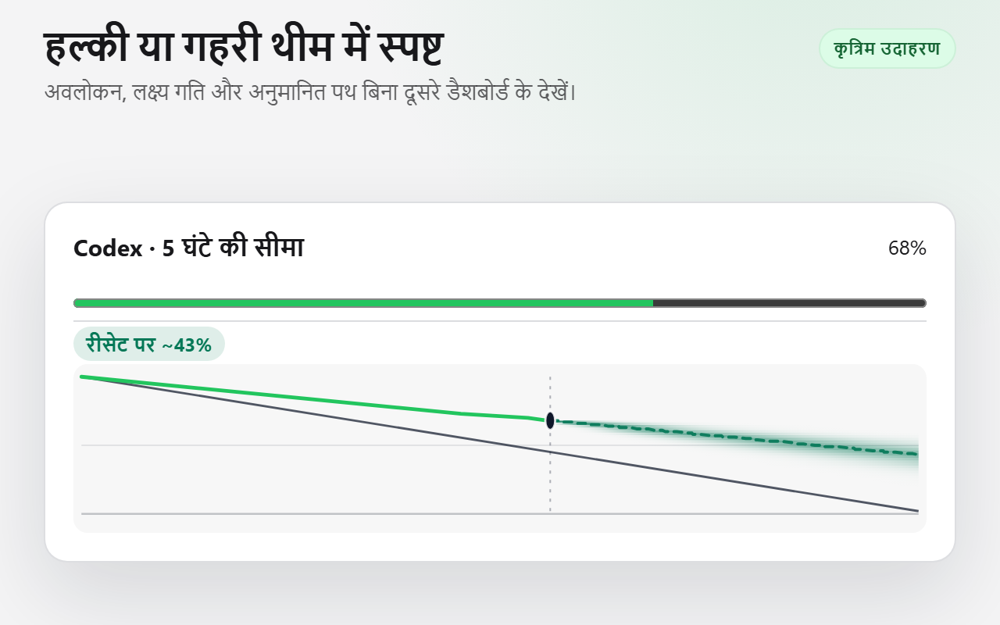
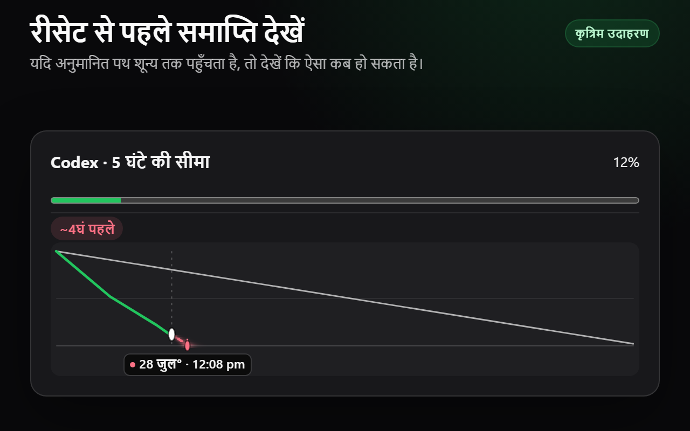
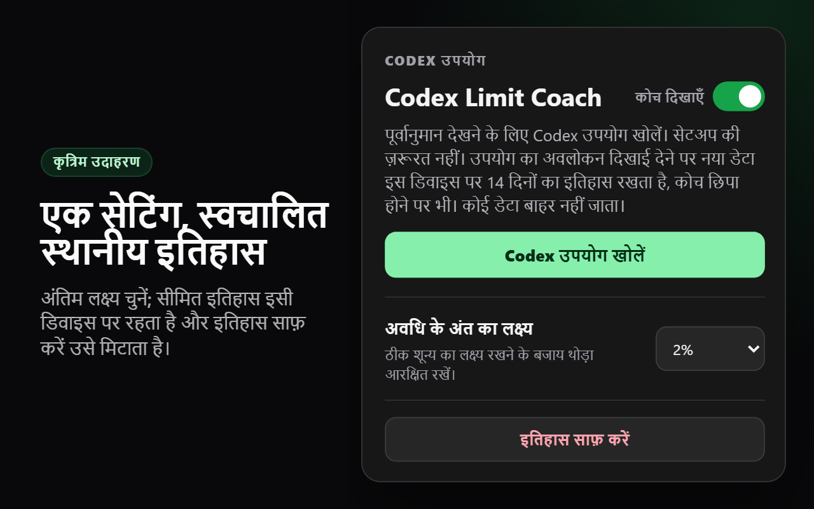

परिणाम पहले
हर मीटर स्वतंत्र रूप से रीसेट पर अनुमानित शेष या शून्य होने का समय दिखाता है। कोई कार्ड दूसरे को नहीं बदलता।
क्या आपका Codex कोटा रीसेट तक चलेगा? Codex Limit Coach, Codex उपयोग अवलोकन के हर समर्थित कोटा कार्ड के पास रीसेट पर अनुमानित शेष या कोटा शून्य होने का संभावित समय दिखाता है।

1. एक्सटेंशन इंस्टॉल करें और उसका पॉपअप खोलें। 2. “Codex उपयोग खोलें” चुनें और ज़रूरत हो तो साइन इन करें। 3. समर्थित कोटा कार्ड के पास पूर्वानुमान देखें। इंस्टॉल करते समय Codex उपयोग पृष्ठ खुला था तो उसे एक बार रीलोड करें।
हर मीटर स्वतंत्र रूप से रीसेट पर अनुमानित शेष या शून्य होने का समय दिखाता है। कोई कार्ड दूसरे को नहीं बदलता।
देखा गया उपयोग पूर्वानुमान तय करता है। लक्ष्य केवल स्थिर दायरे के सामने पथ को रंग देने वाला शांत संदर्भ है।
अवधि के अंत का लक्ष्य चुनें। सीमित 14-दिन का इतिहास स्वचालित है, इसी डिवाइस पर रहता है और पॉपअप से साफ़ किया जा सकता है।
1. एक्सटेंशन इंस्टॉल करें और उसका पॉपअप खोलें। 2. “Codex उपयोग खोलें” चुनें और ज़रूरत हो तो साइन इन करें। 3. समर्थित कोटा कार्ड के पास पूर्वानुमान देखें। इंस्टॉल करते समय Codex उपयोग पृष्ठ खुला था तो उसे एक बार रीलोड करें।




Codex उपयोग पृष्ठ खुला रहने पर, पेज के पढ़ने के समय Codex Limit Coach पेज के अपने सफलतापूर्वक डिकोड किए गए कोटा परिणाम को निष्क्रिय रूप से देखता है। यह केवल पूर्वानुमान के लिए आवश्यक स्थिर मीटर और विंडो पहचान, उपयोग प्रतिशत, विंडो अवधि और रीसेट समय तक पहुँचता है। यह अवलोकन समय स्थानीय रूप से बनाता है और परिणामों को मूल कार्ड से केवल मेल खाते संख्यात्मक प्रगति और रीसेट मेटाडेटा के जरिए जोड़ता है—अनुवादित लेबल या कार्ड क्रम से कभी नहीं। सेटिंग और स्वचालित सीमित स्नैपशॉट chrome.storage.local में रहते हैं।
यह कोई अतिरिक्त नेटवर्क अनुरोध शुरू नहीं करता, उत्तर को क्लोन या अलग से डिकोड नहीं करता, कुकी या प्राधिकरण हेडर नहीं देखता, कोटा डेटा नहीं भेजता और खाता, ईमेल, प्लान, क्रेडिट या खर्च-नियंत्रण फ़ील्ड तक नहीं पहुँचता। एक्सटेंशन की एकमात्र अनुमति storage है। पैकेज की गई दो कंटेंट-स्क्रिप्ट घोषणाएँ सीधे और SPA प्रवेश के लिए दो सीमित https://chatgpt.com/codex/* और https://chatgpt.com/settings/usage* मिलान पैटर्न साझा करती हैं; रनटाइम डेटा प्रबंधन और रेंडरिंग समर्थित उपयोग दृश्यों तक सीमित रहते हैं। कोई बैकग्राउंड कॉन्टेक्स्ट, बैकएंड, टेलीमेट्री, विज्ञापन, रिमोट कोड या Codex Limit Coach खाता प्रणाली नहीं है।
Codex Limit Coach Chrome Web Store पर मुफ़्त है।